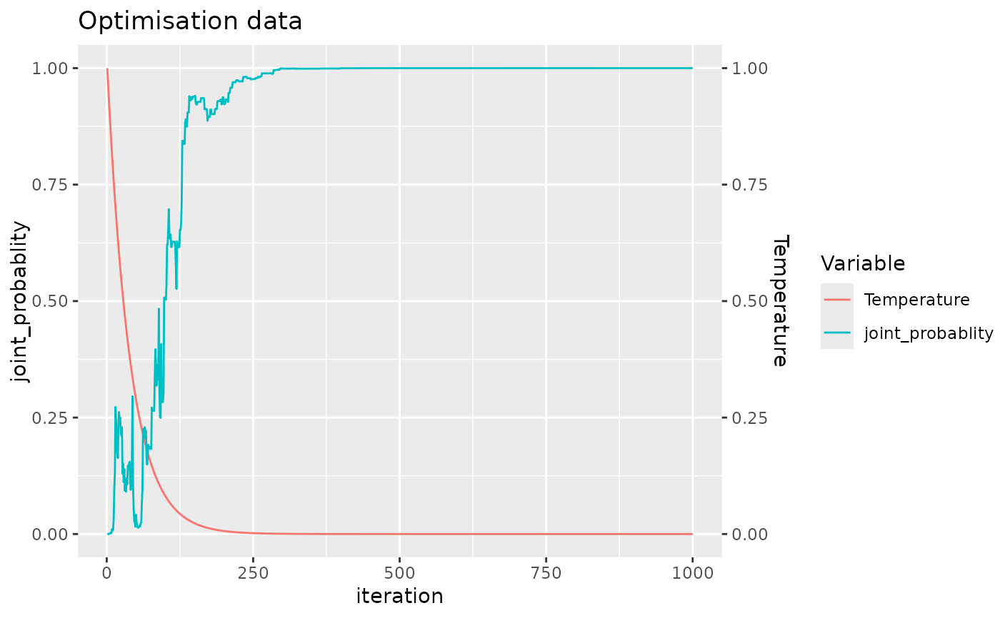

Allocate Samples to Batches Using Specified Method
allocate_samples.RdThis function allocates samples to batches based on the specified method, which can be random allocation, best random allocation, or simulated annealing. It supports optional blocking and handles various types of covariates.
Usage
allocate_samples(
data,
id_column = "sample_id",
method = "simulated_annealing",
covariates,
blocking_variable = NA,
batch_size,
iterations = 1000,
temperature = 1,
cooling_rate = 0.975,
seed = 123,
plot_convergence = TRUE
)Arguments
- data
A
data.framecontaining the dataset to be processed.- id_column
A string specifying the column name in
datathat contains the sample IDs. The default is "sample_id".- method
A string specifying the allocation method to be used. Valid options are "random", "best_random", and "simulated_annealing". The default is "simulated_annealing".
- covariates
A character vector listing the names of the covariate columns in
datathat should be considered during allocation.- blocking_variable
An optional string specifying the name of the column to be used as a blocking variable. If not provided or
NA, blocking is not applied.- batch_size
An integer specifying the size of each batch.
- iterations
An integer specifying the number of iterations to run for the "best_random" or "simulated_annealing" methods. The default is 1000.
- temperature
A numeric specifying the initial temperature for the simulated annealing method. The default is 1.
- cooling_rate
A numeric specifying the cooling rate for the simulated annealing method. The default is 0.975.
- seed
An integer used for setting the seed to ensure reproducibility. The default is 123.
- plot_convergence
= TRUE A logical indicating whether to plot the convergence of the optimisation process, only relevant if the method specified is "simulated_annealing". The default is
TRUE.
Value
An object containing the allocation layout of samples to batches, along with any specified blocking and covariate adjustments. The exact structure of the return value depends on the allocation method used.
Details
The function first checks the validity of the specified method and parameters, then preprocesses the data according to the specified covariates and blocking variable. It applies the specified allocation method to assign samples to batches, aiming to balance the distribution of covariates and, if applicable, blocking levels across batches.
Examples
# Allocate samples using simulated annealing without blocking
my_data = simulate_data(n_samples = 100)
allocated_data <- allocate_samples(data = my_data,
id_column = "sample_id",
method = "simulated_annealing",
covariates = c("covariate1", "covariate2", "covariate3"),
batch_size = 13)
#> No blocking variable specified.
#> Covariate: covariate1 - continuous
#> Covariate: covariate2 - continuous
#> Covariate: covariate3 - categorical
#> Number of samples: 100

#> Joint probability that the final layout is balanced: 0.9999991
#> Joining with `by = join_by(covariate1, covariate2, covariate3, sample_id)`